WSTĘP
Po tym rozdziale potrafisz:
- wyjaśnić, czym zajmuje się statystyka przestrzenna i co odróżnia ją od statystyki stosowanej do danych pozbawionych lokalizacji,
- rozróżnić trzy rodzaje danych przestrzennych i wskazać nurt metodologiczny właściwy dla każdego z nich,
- dobrać grupę metod do pytania badawczego i rodzaju danych,
- umiejscowić statystykę przestrzenną względem analiz przestrzennych i GIS oraz względem ekonometrii przestrzennej,
- wskazać prace, które wyznaczyły kolejne etapy rozwoju metod statystyki przestrzennej.
Rozumiesz i umiesz zinterpretować:
- zależność przestrzenną oraz pierwsze prawo geografii,
- autokorelację przestrzenną jako konsekwencję zależności przestrzennej,
- co jest przedmiotem analizy dla danych punktowych, obszarowych i powierzchniowych ciągłych przestrzennie,
- skutek niespełnienia założenia o niezależności obserwacji,
- odpowiedniki metod statystyki klasycznej w statystyce przestrzennej,
- co przedstawia mapa klastrów przestrzennych i do której grupy metod należy.
Część praktyczna: 1 Dane przestrzenne w R. Słownik pojęć: Załącznik D — Słownik pojęć. Pakiety: Załącznik A — Pakiety. Funkcje: Załącznik B — Funkcje.
Termin statystyka przestrzenna odnosi się do stosowania pojęć i metod statystycznych do danych, które mają wyraźną strukturę przestrzenną, która jest ważna dla zrozumienia tych danych (de Smith, Goodchild, i Longley, b.d.). Statystyka przestrzenna dostarcza narzędzi badawczych oraz podstaw teoretycznych związanych ze zbieraniem danych, analizą danych oraz wnioskowaniem statystycznym dla danych przestrzennych (Suchecka 2014).
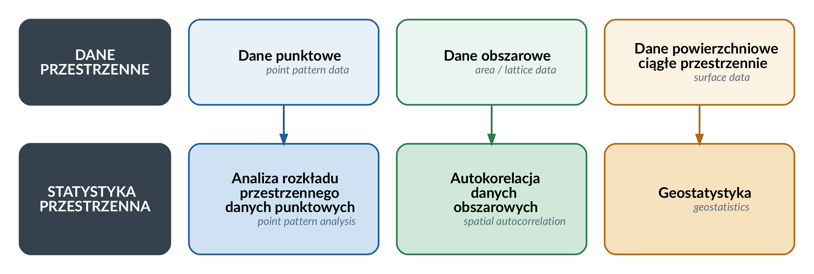
Ze względu na możliwości zastosowania metod statystycznych można wyróżnić trzy rodzaje danych przestrzennych (Cressie 1993):
- dane punktowe (point pattern data) - bezatrybutowe; przedmiotem analizy jest samo rozmieszczenie zdarzeń, a zbiór ich lokalizacji jest realizacją pola losowego;
- dane obszarowe (area data) - powstają poprzez podzielenie obszaru badań na jednostki przestrzenne, w których agregowane są wyniki, np. podział na jednostki administracyjne;
- dane powierzchniowe ciągłe przestrzennie (surface data, spatially continous data) - określane poprzez ciągłą zmienność na podstawie funkcji odległości (np. temperatura powietrza, opady atmosferyczne, występowanie złóż surowców naturalnych).
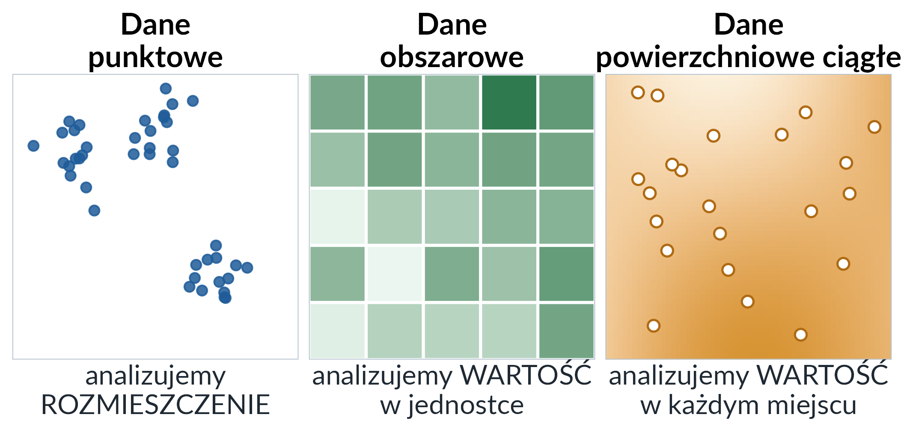
Dane punktowe i pomiary zjawiska ciągłego wyglądają na mapie tak samo — jako zbiór punktów — a należą do różnych nurtów. Rozstrzyga przedmiot analizy: dla danych punktowych jest nim rozmieszczenie zdarzeń, dla danych obszarowych wartość przypisana jednostce, a dla danych powierzchniowych ciągłych — wartość w każdym miejscu obszaru, szacowana na podstawie pomiarów wykonanych w wybranych punktach.
Ze względu na rodzaj analizowanych danych w statystyce przestrzennej można wyróżnić trzy główne nurty (Suchecka 2014):
analizę danych punktowych (ang. point pattern analysis) - stosuje się do określenia, w jaki sposób dane obiekty (zdarzenia) są rozmieszczone w przestrzeni (losowo, regularnie, skupione w klastry).
metody analizy danych obszarowych i punktowych atrybutowych - stosuje się do oceny autokorelacji przestrzennej i sprawdzenia, czy obszary bliskie mają podobne, czy różne wartości.
geostatystykę - stosuje się do zrozumienia zmienności przestrzennej lub czasowej zjawisk ciągłych przestrzennie (np. rozkład opadów atmosferycznych, zanieczyszczeń powietrza).
W kolejnych rozdziałach omówione zostaną metody wchodzące w skład wymienionych wyżej nurtów statystyki przestrzennej.
Podstawowe pojęcia
Statystyka przestrzenna
Termin statystyka przestrzenna odnosi się do stosowania pojęć i metod statystycznych do danych, które mają wyraźną strukturę przestrzenną, która jest ważna dla zrozumienia tych danych (de Smith, Goodchild, i Longley, b.d.)
Statystyka przestrzenna dostarcza narzędzi badawczych oraz podstaw teoretycznych związanych ze zbieraniem danych, analizą danych oraz wnioskowaniem statystycznym dla danych przestrzennych (Suchecka 2014).
Zależność przestrzenna
podstawowa koncepcja analiz przestrzennych
pojęcie zależności przestrzennej (ang. spatial dependence) zostało ujęte przez Toblera (Tobler 1970): “Wszystkie rzeczy są ze sobą powiązane, ale rzeczy bliskie są bardziej powiązane niż rzeczy odległe”.
sformułowanie Toblera jest znane jako “Pierwsze prawo geografii” (ang. First Law of Geography)
“wielkość” zależności przestrzenej może być mierzona za pomocą statystyk autokorelacji przestrzennej.
zależność przestrzenna stanowi także podstawę metod stosowanych w ramach geostatystyki, która opisuje zmienność przestrzenną za pomocą funkcji pokazującej, jak autokorelacja przestrzenna maleje wraz ze wzrostem odległości.
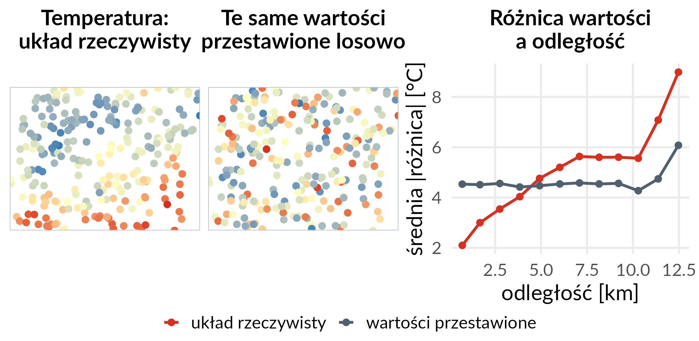
Lokalizacje i zbiór wartości są w obu układach te same; różni je wyłącznie przyporządkowanie wartości do lokalizacji. W układzie rzeczywistym średnia bezwzględna różnica temperatury rośnie z 2,1 °C dla par punktów oddalonych średnio o 0,7 km do 9,0 °C dla par oddalonych o 12,5 km. Po losowym przestawieniu wartości ta sama miara utrzymuje się na poziomie około 4,5 °C na niemal całym zakresie odległości. Zależność przestrzenna jest więc własnością układu wartości, a nie samego zbioru lokalizacji.
Autokorelacja przestrzenna

Zwróć uwagę na zmianę układu wartości: od skupienia wartości podobnych, przez brak widocznej struktury, po układ naprzemienny.
Źródło: https://mgimond.github.io/Spatial/spatial-autocorrelation.html
określana jako sytuacja, w której występowanie jednego zjawiska w jednej jednostce przestrzennej powoduje zmniejszenie lub zwiększenie się tego zjawiska w jednostkach sąsiednich (Bivand 1980)
może być obserwowana jako klastry podobnych wartości lub systematyczny wzorzec przestrzenny (spatial pattern)
jest to konsekwencja występowania zależności przestrzennych - oznacza, że bliskie geograficznie obserwacje są bardziej do siebie podobne niż te odległe
sam termin autokorelacja przestrzenna wprowadzili w 1968 roku Cliff i Ord; do tego czasu używano pojęć: zależność przestrzenna (spatial dependency), interakcje przestrzenne (spatial interactions), związek przestrzenny (spatial association) (Suchecka 2014)
pierwsze miary autokorelacji przestrzennej wprowadzone zostały w latach 50. XX w. w pracach Moran (1950) oraz Geary (1954), a następnie rozszerzone o miary lokalne w latach 90.
Rozwój metod statystyki przestrzennej
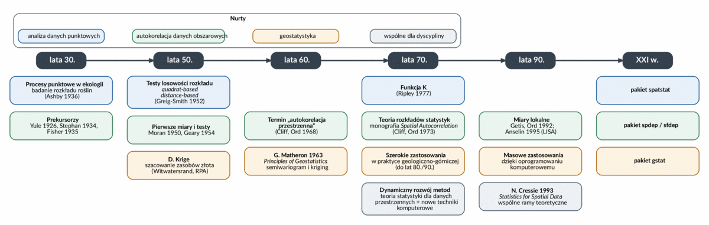

wstep_historia.png (3200 × 1016 pikseli).Rycina porządkuje rozwój dyscypliny w trzech pasmach — po jednym na każdy nurt — oraz w paśmie wspólnym dla całej dyscypliny. Nurty rozwijały się przez kilkadziesiąt lat równolegle i w dużej mierze niezależnie od siebie: geostatystyka w kręgu francuskojęzycznym, statystyka autokorelacji przestrzennej w anglojęzycznym; kontakt obu środowisk zaczął się w latach 70. (Chun i Griffith 2013). W paśmie geostatystycznym rycina wskazuje także prace D. Krige’a z początku lat 50. nad szacowaniem zasobów złota, które poprzedziły formalizację Matherona (Krige 1951). Ostatnia kolumna wymienia pakiety R, w których metody każdego z nurtów są dziś dostępne — to one są narzędziem pracy w dalszej części skryptu.
lata 30. XX w.
zastosowanie teorii procesów punktowych w ramach analiz przestrzennych do analizy przestrzennego rozmieszczenia zjawisk (pierwsze zastosowanie: ekologia - badanie rozkładu gatunków drzew w przestrzeni)
praca Stephan (1934): dane geograficzne są ze sobą powiązane jak kiście winogron, a nie oddzielne jak kule w urnie
eksperyment Fishera (Fisher 1935): wyniki eksperymentu pokazały zbliżone poziomy wydajności z upraw pól leżących obok siebie.
lata 50. XX w. (Moran 1950; Geary 1954)
opracowanie obecnie stosowanych testów statystycznych do weryfikacji istotności autokorelacji przestrzennej wartości atrybutów dla regularnych obiektów obszarowych (regular lattice system). Testy te służą do weryfikacji hipotezy zerowej o braku autokorelacji przestrzennej (braku struktury przestrzennej), wobec nieokreślonej hipotezy alternatywnej
wyprowadzone statystyki autokorelacji przestrzennej były określane miernikami sąsiedztwa
lata 70. XX w.
- dynamiczny rozwój metod statystyki przestrzennej
- dwa kierunki badań:
- rozwój podstaw teorii statystyki dla danych przestrzennych
- rozwój nowych metod i technik badawczych związanych głównie z pojawieniem się nowych technik komputerowych
- monografia Spatial Autocorrelation (Cliff i Ord 1973), w której Cliff i Ord dostarczyli teorii rozkładów dla statystyk autokorelacji — termin wprowadzili pięć lat wcześniej (patrz wyżej)
lata 90. XX w
- poszerzenie globalnych miar autokorelacji przestrzennej o miary lokalne które wyznacza się oddzielnie dla każdego obszaru — statystykę G Getisa i Orda (Getis i Ord 1992), statystykę LISA (local indicators of spatial association) (Anselin 1995) oraz lokalną statystykę \(C_i\) Geary’ego
Statystyka przestrzenna a inne dyscypliny
Statystyka przestrzenna jest odrębną dyscypliną wywodzącą się z analiz przestrzennych oraz ściśle związaną z tradycyjnymi metodami statystycznymi i nowocześniejszą statystyką obliczeniową (ang. computational statistics).
Statystyka przestrzenna dostarcza formalnych narzędzi statystycznych w ramach szerszego procesu badania danych przestrzennych.
Metody statystyki przestrzennej są także implementowane w ramach oprogramowania GIS:
Statystyka przestrzenna a analizy przestrzenne i GIS
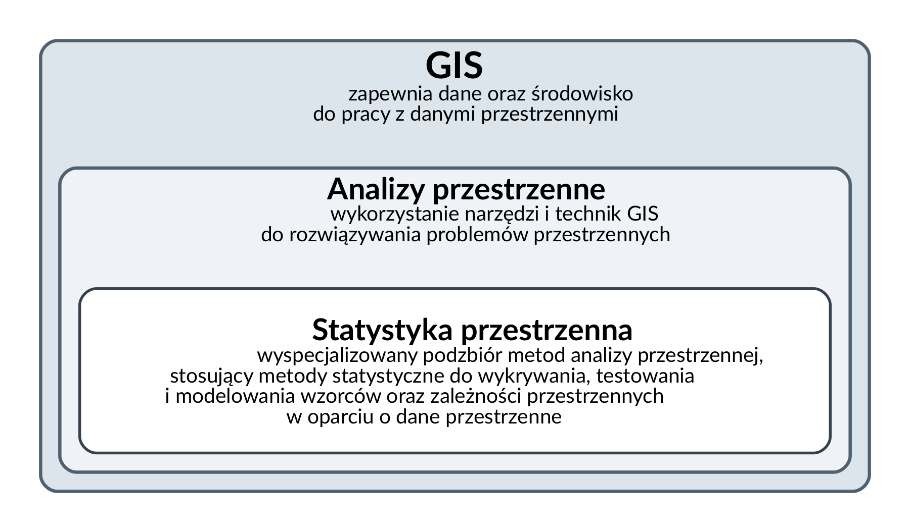
Zakresy są zagnieżdżone: statystyka przestrzenna jest wyspecjalizowanym podzbiorem analiz przestrzennych, a te prowadzone są na danych i w środowisku dostarczanym przez GIS.
| Opis | |
|---|---|
| Systemy Informacji Geograficznej (GIS) |
|
| Analizy przestrzenne |
Zastosowanie:
|
| Statystyka przestrzenna |
Zastosowanie:
|
Statystyka przestrzenna a statystyka
Statystyka przestrzenna w odróżnieniu od klasycznej statystyki umożliwia analizę danych geograficznych oraz informacji zlokalizowanych w przestrzeni.
Statystyka przestrzenna i klasyczna statystyka różnią się jednym zasadniczym założeniem:
Klasyczna statystyka: zakłada niezależność obserwacji, tzn. elementy próby są dobierane niezależnie od siebie (tj. losowo)
Statystyka przestrzenna: założenie o niezależności obserwacji nie jest spełnione. Zgodnie z regułą Toblera (nazywaną też pierwszym prawem geografii) obiekty sąsiadujące w przestrzeni/czasie są do siebie bardziej podobne niż obiekty dalej od siebie położone. Nie znaczy to, że dobór próby jest nielosowy: zależność jest własnością zjawiska, a nie schematu losowania. Znaczy to, że obserwacje niosą informację nadmiarową, a efektywna liczebność próby — równoważna liczba obserwacji niezależnych — jest mniejsza niż liczba obserwacji (Chun i Griffith 2013).
Analogie między statystyką a statystyką przestrzenną
Metodologia badań statystyki przestrzennej w większości powstała na podstawie metod statystyki klasycznej. W ramach statystyki przestrzennej także wyróżnia się statystykę opisową oraz wnioskowanie statystyczne.
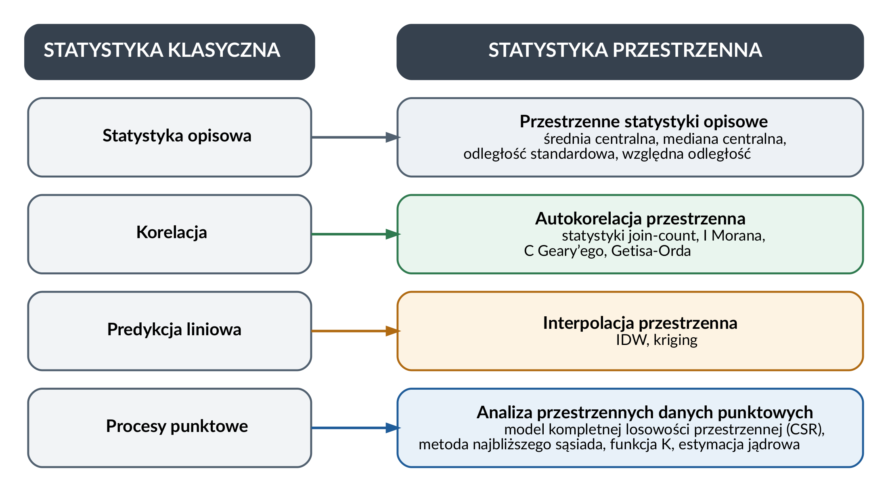
Statystyka przestrzenna a ekonometria przestrzenna
| Statystyka przestrzenna | Ekonometria przestrzenna |
|---|---|
| opiera się na analizie danych odnoszących się do różnych dyscyplin | opiera się na modelowaniu, zajmuje się specyfikacją, estymacją i weryfikacją modeli uwzględniajacych aspekt przestrzenny |
| większość opracowań z zakresu statystyki przestrzennej dotyczy zjawisk w dziedzinie biologii, ekologii, epidemiologii, geologii | analiza przestrzennych danych ekonomicznych oraz związanych z nimi problemów opisuje przede wszystkim procesy ekonomiczne na poziomie regionalnym |
Zastosowania statystyki przestrzennej
Główne nurty metodologiczne w statystyce przestrzennej
Ze względu na rodzaj analizowanych danych w statystyce przestrzennej można wyróżnić trzy główne nurty:
- analizę danych punktowych (ang. point pattern analysis)
- geostatystykę
- metody analizy danych obszarowych i punktowych atrybutowych.
Griffith (1999) wśród metod statystyki przestrzennej wyróżnia:
- analizę danych punktowych
- geostatystykę
- autoregresję przestrzenną
- metody wizualizacji danych
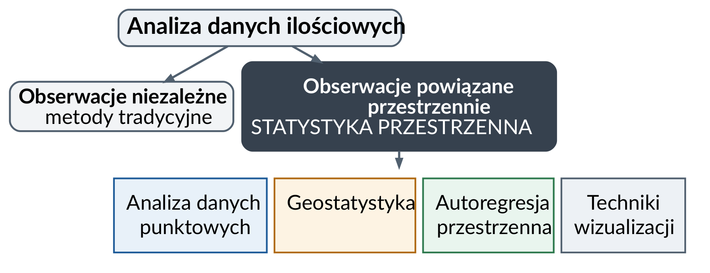
Granica przebiega według tego, czy obserwacje można uznać za niezależne. Metody tradycyjne zakładają niezależność; statystyka przestrzenna obejmuje cztery wymienione wyżej grupy metod.
Analiza danych punktowych (bezatybutowych)
Cel
określenie w jaki sposób dane obiekty/zdarzenia są rozmieszczone w przestrzeni.
- Czy punkty są rozmieszczone losowo? (tzn. na ich rozmieszczenie nie działa żaden czynnik lub zależą od wielu czynników które się wzajemnie znoszą)
- Czy punkty są rozmieszczone regularnie? (tj. efekt świadomego działania, nie jest to proces naturalny)
- Czy występują skupiska (klastry) punktów? (tzn. na rozmieszczenie punktów wpływa jakiś czynnik)
rozpoznanie wzorca rozmieszczenia punktów w przestrzeni jest podstawą do wykrycia zależności przestrzennych.
Dane punktowe
Przykładami danych punktowych bezatrybutowych są:
- dane epidemiologiczne dotyczące występowania przypadków zachorowań
- rozkłady występowania określonych gatunków roślin czy zwierząt.
Przykłady danych punktowych: zbiory danych z pakietu spatstat
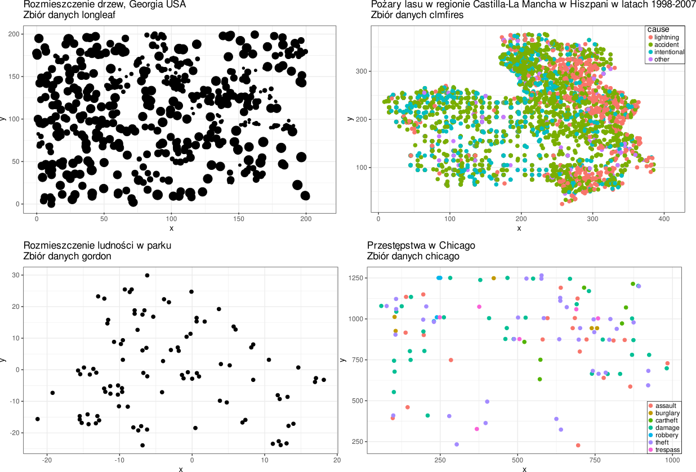
longleaf), pożary lasu (clmfires), rozmieszczenie ludności w parku (gordon) oraz przestępstwa (chicago).Nie wszystkie te zbiory są bezatrybutowe: w clmfires i chicago punktom przypisano znacznik (przyczynę pożaru, typ przestępstwa), a w longleaf wielkość punktu odpowiada średnicy pnia na wysokości piersi, czyli wartości znacznika liczbowego.
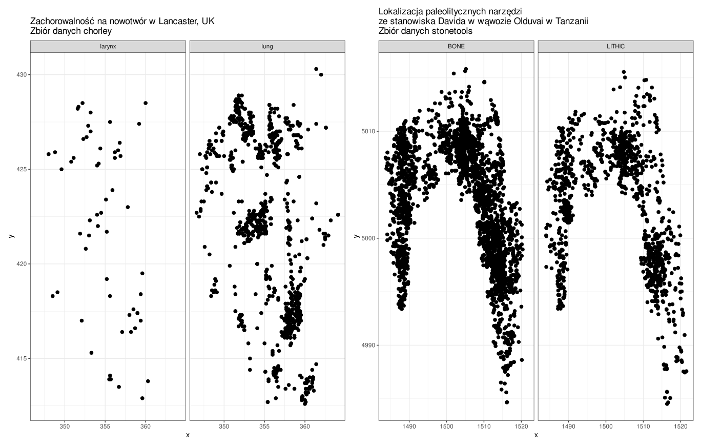
chorley) oraz lokalizacja narzędzi paleolitycznych (stonetools).Oba zbiory rozbito na panele według wartości znacznika: typu nowotworu (krtani, płuc) oraz rodzaju znaleziska (kość, wyrób kamienny). Zestawienie paneli jest pytaniem o to, czy obie grupy zdarzeń rozkładają się w przestrzeni tak samo.
Zastosowanie
Analiza przestrzennych danych punktowych jest stosowana w wielu dziedzinach:
biologia, ekologia, botanika -
- rozmieszczenie gatunków roślin,
- rozmieszczenie gatunków ptaków i ich lęgowisk
- badanie rozkładu gatunków drzew w przestrzeni (badanie rozmieszczenia roślin stało się pierwowzorem technik analizy przestrzennych danych punktowych)
epidemiologia - rozprzestrzenianie się chorób (wirusów, bakterii)
ochrona zdrowia - obszary występowania chorób zakaźnych, nowotworów
nauki ekonomiczne - przestrzenne zróżnicowanie zjawisk ekonomicznych, np. dochodów, bezrobocia
archeologia
- zróżnicowanie lokalizacji stanowisk archeologicznych w kontekście rozwoju społeczno-środowiskowego
- analiza wzorców stanowisk stanowi mocną metodę zrozumienia preferencji lokalizacji stanowisk w archeologii.
geografia
- rozprzestrzenianie się pożarów
Geostatystyka
- Geostatystyka to gałąź statystyki skupiająca się na przestrzennych lub czasoprzestrzennych zbiorach danych.
- Uwzględnia w analizie przestrzenną i czasową lokalizację.
- Podstawą opisu struktury przestrzennej jest semiwariogram - funkcja określająca zależność pomiędzy średnim zróżnicowaniem wartości analizowanej cechy i odległością między punktami pomiaru (zakłada się, że podobieństwo wartości maleje wraz z odleglością).
- Początki geostatystyki: lata 60.XX w. — francuski matematyk Georges Matheron sformułował w 1963 roku zasady geostatystyki (Matheron 1963), mające na celu optymalizację szacowania parametrów geologicznych.
Cel
- zrozumienia zmienności przestrzennej lub czasowej zjawiska
- szacowanie wartości dla całego obszaru (dane ciągłe) na podstawie danych punktowych (estymacja)
- określenie prawdopodobieństwa przekroczenia w danym punkcie lub obszarze wartości progowej
- Optymalizacja próbkowania oraz sieci monitoringowych
Przykłady zastosowania
Modelowanie zmienności przestrzennej opadów na podstawie zbioru danych sic97 (Spatial Interpolation Comparison 1997 data set: Swiss Rainfall) z pakietu gstat przedstawiającego 100 pomiarów wysokości opadów w obszarze Szwajcarii.
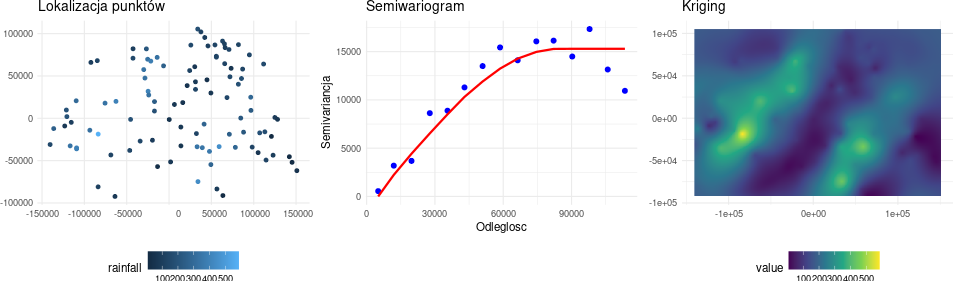
sic97.Modelowanie zmienności przestrzennej zanieczyszczenia gleb (zmienna Co) na podstawie zbioru danych jura z pakietu gstat. Zbiór danych przedstawia pomiary zanieczyszczenia gleby metalami ciężkimi w 259 lokalizacjach. Zbiór danych jura pochodzi z książki Goovaerts (1997).
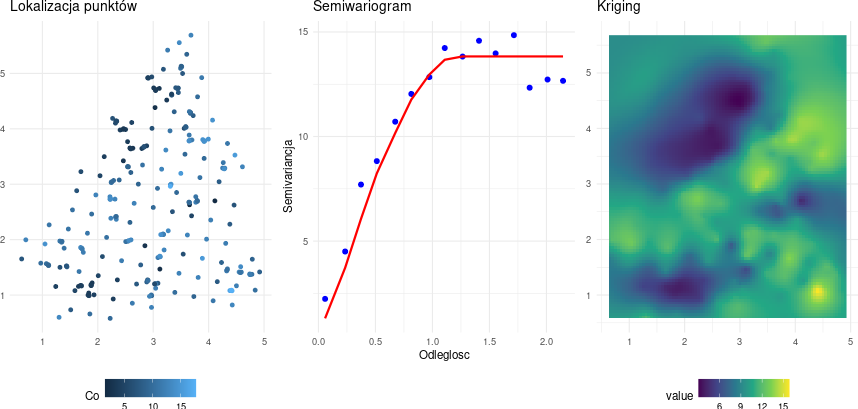
jura.Modelowanie zmienności przestrzennej zanieczyszczenia powietrza w Kalifornii (średnia zawartość Ozonu w latach 1980-2009) na podstawie zbioru danych airqual z pakietu rspat.
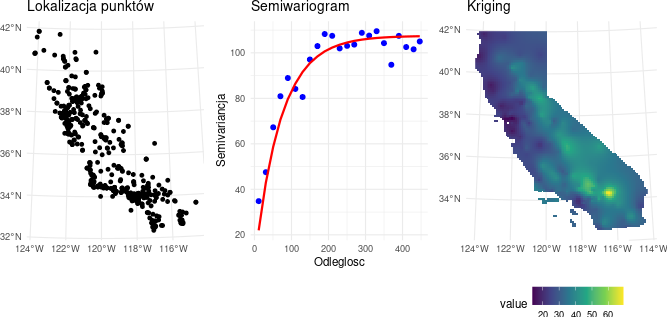
airqual.Zastosowanie geostatystyki
Geostatystyka jest stosowana obecnie w wielu dyscyplinach, takich jak: geologia naftowa, oceanografia, geochemia,logistyka, leśnictwo, gleboznawstwo, hydrologia, meteorologia, epidemiologia.
Górnictwo, geologia, eksploracja zasobów naturalnych:
- szacowanie rezerw mineralnych,
- charakterystyki złoża,
- optymalizacji miejsc wierceń.
- https://geojournals.pgi.gov.pl/bp/article/view/28824/pdf
Zarządzanie kryzysowe
- ocena ryzyka związanego z klęskami żywiołowymi, takimi jak trzęsienia ziemi, osuwiska i powodzie, w celu opracowania strategii zarządzania katastrofami i łagodzenia ryzyka.
Rolnictwo
- analizę jakości gleby,
- prognozowanie plonów
- precyzyjne rolnictwo poprzez pomiar zmienności przestrzennej właściwości gleby.
Geografia
- ocena zanieczyszczeń, np. mapy zanieczyszczeń powietrza.
Hydrologia
- modelowanie głębokości wód gruntowych,
- prognozowanie występowania opadów
- ocena ryzyka powodzi poprzez analizę wzorców przestrzennych zmiennych hydrologicznych.
Epidemiologia i geografia zdrowia
- badanie przestrzennego rozmieszczenia chorób,
- analiza dostępu do opieki zdrowotnej i
- przewidywania wybuchów chorób w różnych lokalizacjach.
Ubezpieczenia i finanse:
- wykorzystywane w branży ubezpieczeniowej do oceny i zarządzania ryzykiem związanym z klęskami żywiołowymi lub rozprzestrzenianiem się chorób w celu decydowania o odpowiednich składkach i skutecznego zarządzania portfelami.
Autokorelacja przestrzenna danych obszarowych
Cel
- analiza podobieństwa i różnic między obszarami/regionami
- wyszukanie obszarów podobnych do siebie
- znalezienie obszarów znacząco różnych od sąsiednich
- kluczowe zadanie: określenie, które obszary ze sobą sąsiadują.
Przykład zastosowania
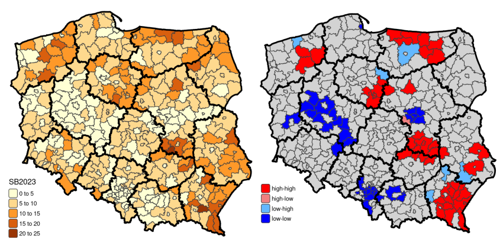
Mapa po lewej przedstawia rozkład wartości zmiennej: każdy powiat ma przypisaną jedną liczbę, a barwa odpowiada przedziałowi wartości. Mapa po prawej jest wynikiem lokalnej miary autokorelacji przestrzennej i wskazuje powiaty, dla których układ wartości w ich otoczeniu różni się istotnie od układu przypadkowego: high-high to powiat o wysokiej wartości otoczony powiatami o wysokich wartościach, low-low — powiat o niskiej wartości wśród niskich, a high-low i low-high to powiaty odstające od swojego sąsiedztwa. Powiaty wyszarzone nie różnią się istotnie od układu przypadkowego. Sposób wyznaczania takich klastrów oraz warunki poprawnego odczytu takiej mapy opisuje 7 Miary autokorelacji danych obszarowych.
Od pytania badawczego do metody
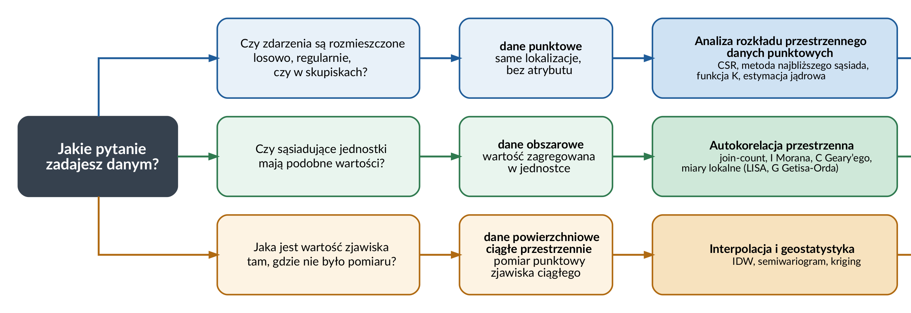
Rycinę czyta się od lewej: punktem wyjścia jest pytanie zadawane danym, a nie format, w którym dane są zapisane. To samo zjawisko zapisane jako zbiór punktów prowadzi do innej grupy metod w zależności od tego, czy przedmiotem zainteresowania jest rozmieszczenie zdarzeń, czy wartość zmierzona w punkcie.
Powiązanie z ćwiczeniami
| Pytanie badawcze | Rodzaj danych | Grupa metod | Gdzie wykonujesz |
|---|---|---|---|
| Jak wczytać, złączyć i zwizualizować dane przestrzenne w R? | wszystkie | — | 1 Dane przestrzenne w R |
| Jaki jest rozkład wartości zmiennej i czy widać w nim układ przestrzenny? | wszystkie | eksploracyjna analiza danych | 2 Eksploracyjna analiza danych |
| Czy zdarzenia są rozmieszczone losowo, regularnie, czy w skupiskach? | punktowe (bezatrybutowe) | analiza rozkładu przestrzennego danych punktowych | 3 Statystyki centrograficzne, 4 Metody oparte na analizie intensywności, 5 Metody oparte na odległości |
| Czy sąsiadujące jednostki mają podobne wartości? | obszarowe | autokorelacja przestrzenna | 6 Określanie sąsiedztwa danych obszarowych, 7 Miary autokorelacji danych obszarowych |
| Jaka jest wartość zjawiska tam, gdzie nie było pomiaru? | powierzchniowe ciągłe przestrzennie | interpolacja i geostatystyka | 8 Metody interpolacji, 9 Analiza i modelowanie struktury przestrzennej, 10 Geostatystyczne metody estymacji, 11 Ocena jakości estymacji |
Opis pakietów wraz z odnośnikami do dokumentacji zawiera Załącznik A — Pakiety, a pełne zestawienie funkcji — Załącznik B — Funkcje.
Literatura
- Suchecka (2014) — podział danych przestrzennych i nurtów metodologicznych, rozwój metod, porównanie statystyki przestrzennej ze statystyką klasyczną oraz z ekonometrią przestrzenną.
- Cressie (1993) — podział danych przestrzennych i wspólne ramy teoretyczne dyscypliny.
- Chun i Griffith (2013) — założenie o niezależności obserwacji i jego konsekwencje; równoległy rozwój trzech nurtów.
- Gimond (b.d.) — wprowadzenie do analiz przestrzennych i statystyki przestrzennej.
- de Smith, Goodchild, i Longley (b.d.) — definicje pojęć, zależność przestrzenna i relacje przestrzenne.
- Griffith (1999) — podział metod statystyki przestrzennej.
- Tobler (1970) — źródło sformułowania znanego jako pierwsze prawo geografii.
- Moraga (2023), Kopczewska (2023) — podręczniki obejmujące wszystkie trzy nurty.
- Lovelace, Nowosad, i Muenchow (2025) — praca z danymi przestrzennymi w R.
Pytania kontrolne
- Czym zajmuje się statystyka przestrzenna i co odróżnia ją od statystyki stosowanej do danych pozbawionych lokalizacji?
Statystyka przestrzenna stosuje pojęcia i metody statystyczne do danych o wyraźnej strukturze przestrzennej — takiej, która jest istotna dla zrozumienia tych danych. Dostarcza narzędzi badawczych oraz podstaw teoretycznych dla zbierania danych, ich analizy i wnioskowania statystycznego dla danych przestrzennych. Odróżnia ją to, że uwzględnia położenie geograficzne obserwacji oraz zależności przestrzenne między nimi, zamiast traktować obserwacje jako wzajemnie niezależne.
- Wymień trzy rodzaje danych przestrzennych i wskaż nurt metodologiczny właściwy dla każdego z nich.
- Dane punktowe (bezatrybutowe) → analiza rozkładu przestrzennego danych punktowych.
- Dane obszarowe → metody analizy danych obszarowych i punktowych atrybutowych (autokorelacja przestrzenna).
- Dane powierzchniowe ciągłe przestrzennie → geostatystyka.
Dane punktowe i pomiary zjawiska ciągłego wyglądają na mapie tak samo. Rozstrzyga przedmiot analizy: w pierwszym przypadku analizowane jest rozmieszczenie zdarzeń, w drugim — wartość zmierzona w punkcie i wartość w miejscach, w których pomiaru nie było.
- Czym jest zależność przestrzenna i jak brzmi sformułowanie znane jako pierwsze prawo geografii?
Zależność przestrzenna to podstawowa koncepcja analiz przestrzennych, ujęta przez Toblera: „Wszystkie rzeczy są ze sobą powiązane, ale rzeczy bliskie są bardziej powiązane niż rzeczy odległe”. Jej „wielkość” mierzy się statystykami autokorelacji przestrzennej; stanowi ona także podstawę metod geostatystycznych, które opisują zmienność przestrzenną funkcją pokazującą, jak autokorelacja maleje wraz ze wzrostem odległości.
- Czym jest autokorelacja przestrzenna i jak przejawia się na mapie?
Autokorelacja przestrzenna to sytuacja, w której występowanie zjawiska w jednej jednostce przestrzennej powoduje zmniejszenie lub zwiększenie się tego zjawiska w jednostkach sąsiednich. Jest konsekwencją zależności przestrzennej. Na mapie przejawia się jako klastry podobnych wartości albo jako systematyczny wzorzec przestrzenny — na przykład układ naprzemienny wartości wysokich i niskich.
- Które z dwóch podejść — statystyka klasyczna czy przestrzenna — zakłada niezależność obserwacji? Co wynika z niespełnienia tego założenia?
Założenie o niezależności obserwacji przyjmuje statystyka klasyczna. W danych przestrzennych nie jest ono spełnione: obiekty sąsiadujące są do siebie bardziej podobne niż obiekty odległe. Nie znaczy to, że dobór próby jest nielosowy — zależność jest własnością zjawiska, nie schematu losowania. Znaczy to, że obserwacje niosą informację nadmiarową, a efektywna liczebność próby, czyli równoważna liczba obserwacji niezależnych, jest mniejsza niż liczba obserwacji.
- Jak mają się do siebie GIS, analizy przestrzenne i statystyka przestrzenna?
Zakresy są zagnieżdżone. GIS to system do tworzenia, gromadzenia, zarządzania, analizowania i wizualizacji danych; dostarcza danych i środowiska pracy. Analizy przestrzenne to dziedzina obejmująca techniki przetwarzania i analizy danych przestrzennych przy użyciu narzędzi GIS — nakładanie warstw, buforowanie, obliczanie odległości, algebra map. Statystyka przestrzenna jest wyspecjalizowanym podzbiorem analiz przestrzennych, który stosuje do danych przestrzennych pojęcia i metody statystyczne i uwzględnia zależności przestrzenne oraz heterogeniczność przestrzenną.
- Czym statystyka przestrzenna różni się od ekonometrii przestrzennej?
Statystyka przestrzenna opiera się na analizie danych odnoszących się do różnych dyscyplin — większość opracowań dotyczy biologii, ekologii, epidemiologii i geologii. Ekonometria przestrzenna opiera się na modelowaniu: zajmuje się specyfikacją, estymacją i weryfikacją modeli uwzględniających aspekt przestrzenny, przede wszystkim dla procesów ekonomicznych na poziomie regionalnym.
- Na jakie pytanie odpowiada analiza rozkładu przestrzennego danych punktowych, a na jakie geostatystyka?
Analiza rozkładu przestrzennego danych punktowych odpowiada na pytanie, w jaki sposób zdarzenia są rozmieszczone w przestrzeni: losowo, regularnie czy w skupiskach. Geostatystyka odpowiada na pytanie o wartość zjawiska ciągłego w miejscu, w którym nie wykonano pomiaru, a także służy opisowi zmienności przestrzennej zjawiska, określaniu prawdopodobieństwa przekroczenia wartości progowej oraz optymalizacji próbkowania i sieci monitoringowych.
- Co przedstawia mapa klastrów przestrzennych i do której grupy metod należy jej wyznaczenie?
Mapa klastrów wskazuje jednostki, w których układ wartości wraz z ich sąsiedztwem różni się istotnie od układu przypadkowego, i podaje typ tego układu: wysoka wartość wśród wysokich, niska wśród niskich albo wartość odstająca od otoczenia. Jej wyznaczenie należy do metod analizy danych obszarowych — konkretnie do lokalnych miar autokorelacji przestrzennej. Warunkiem wstępnym jest określenie, które jednostki ze sobą sąsiadują.
- Statystyka przestrzenna stosuje pojęcia i metody statystyczne do danych, których struktura przestrzenna jest istotna dla ich zrozumienia.
- Wyróżnia się trzy rodzaje danych przestrzennych — punktowe, obszarowe oraz powierzchniowe ciągłe przestrzennie — i odpowiadające im trzy nurty metodologiczne: analizę rozkładu danych punktowych, autokorelację przestrzenną oraz geostatystykę.
- O przynależności do nurtu rozstrzyga przedmiot analizy, nie wygląd danych na mapie: rozmieszczenie zdarzeń, wartość przypisana jednostce albo wartość w każdym miejscu obszaru.
- Zależność przestrzenna, ujęta przez Toblera jako pierwsze prawo geografii, mówi, że rzeczy bliskie są bardziej powiązane niż odległe; jej „wielkość” mierzą statystyki autokorelacji przestrzennej.
- Autokorelacja przestrzenna to sytuacja, w której występowanie zjawiska w jednej jednostce przestrzennej wpływa na jego wielkość w jednostkach sąsiednich; przejawia się klastrami podobnych wartości lub systematycznym wzorcem przestrzennym.
- Statystyka klasyczna zakłada niezależność obserwacji; w danych przestrzennych założenie to nie jest spełnione i to jest powód istnienia odrębnych metod.
- Statystyka przestrzenna jest wyspecjalizowanym podzbiorem analiz przestrzennych, a te prowadzone są na danych i w środowisku dostarczanym przez GIS.